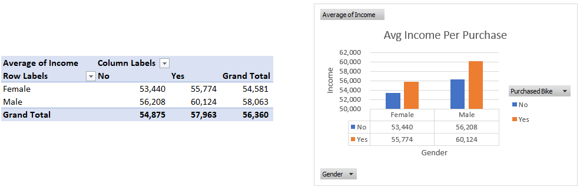
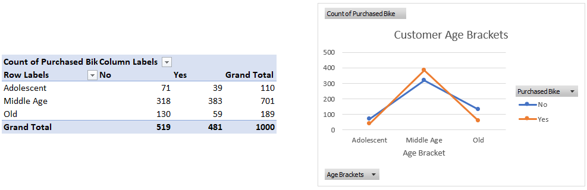
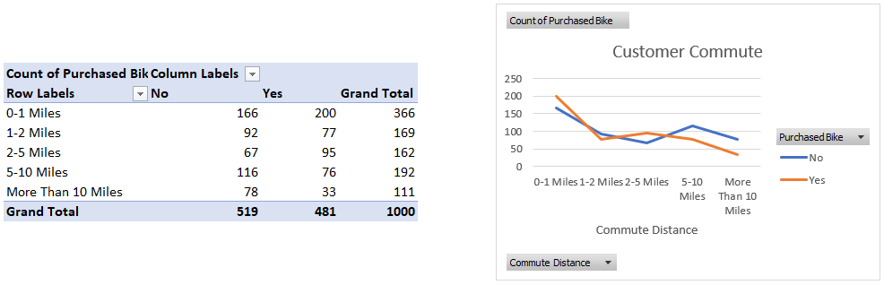
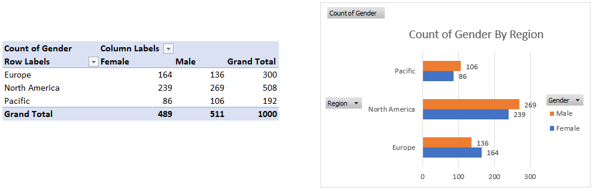
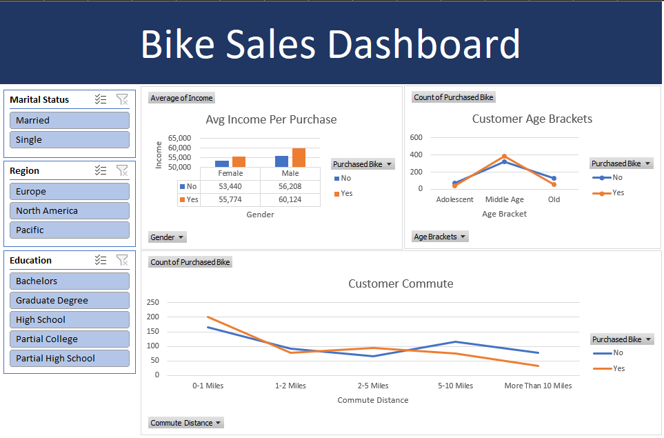

Exploratory Data Analysis of a Bike Sales Dataset

Overview:
This project presents the insights derived from the cleaned bike sales dataset through a series of pivot tables and visualizations. The exploratory data analysis (EDA) focuses on understanding customer demographics, purchasing patterns, and behaviors. Each visualization is paired with key insights and actionable conclusions.
Click here to download my interactive dashboard
1. Creation of Pivot Tables and Charts
Average Income Per Purchase (By Gender)
- Female customers who purchased bikes have an average income of $55,774, while those who did not purchase have an average income of $53,440.
- Male customers who purchased bikes have an average income of $60,124, compared to $56,208 for those who didn’t.
Conclusion: Higher income correlates with a greater likelihood of purchasing a bike for both genders, showing that income is a key determinant in the purchasing decision.
Customer Age Brackets (By Purchase)
- Middle Age (31-54) is the group with the highest number of bike purchases, totaling 383.
- Older customers (>54) are much less likely to purchase a bike, with only 59 purchases.
- The Adolescent group (<31) had the fewest purchases, with only 39.
Conclusion: Middle-aged individuals are the most likely to purchase bikes, likely due to a balance of income, health, and lifestyle choices. As customers get older or are younger, bike purchases tend to decline.
Customer Commute Distance (By Purchase)
- Customers with a 0-1 mile commute distance are the most likely to purchase bikes (200 buyers).
- As the commute distance increases, the likelihood of purchasing a bike decreases significantly.
Conclusion: Biking is popular for short commutes, likely due to the convenience or fitness aspect. Longer commutes are less conducive to bike usage, resulting in fewer purchases.
Gender Distribution (By Region)
- North America has the highest total customer count (508), with a nearly equal distribution between males (269) and females (239).
- Europe has more female customers (164) than male customers (136).
- The Pacific region has more male customers (106) than female customers (86).
Conclusion: Gender distribution varies slightly by region, with North America being the most balanced in terms of male and female customers, while Europe and the Pacific show more significant differences.
2. Creating a Dashboard Derived from the Pivot Tables
Each section of the dashboard was created using pivot tables that allowed me to summarize and visualize key customer insights. Below are the key pivot tables that were used to generate the visualizations:
- Average Income Per Purchase: Derived from a pivot table that grouped customer income by gender and purchase status.
- Customer Age Brackets: A pivot table categorized customers into three age brackets to compare bike purchases.
- Customer Commute Distance: A pivot table used to analyze the relationship between commute distance and bike purchases.
- Detailed Age Breakdown: This chart was derived from a pivot table that counted purchases per exact age.
- Gender by Region: This pivot table compared gender counts across different regions.
The interactive dashboard allows users to filter data by marital status, region, and education level, helping to explore purchasing behavior across various demographics.
3. Concluding Insights and Next Steps
Summary of Insights:
- Income and Bike Purchases: Higher-income customers are more likely to purchase bikes, especially men.
- Age and Purchasing Behavior: Middle-aged individuals (31-54) dominate bike purchases, while adolescents and older customers are less likely to buy.
- Commute Distance: Shorter commutes correlate with higher bike purchases.
- Gender Distribution: Gender distribution varies across regions, with North America having a more balanced customer base.
Next Steps:
Further analysis could involve exploring more granular geographic data or combining this dataset with external factors like climate or urban density to understand how environmental factors influence bike purchases.